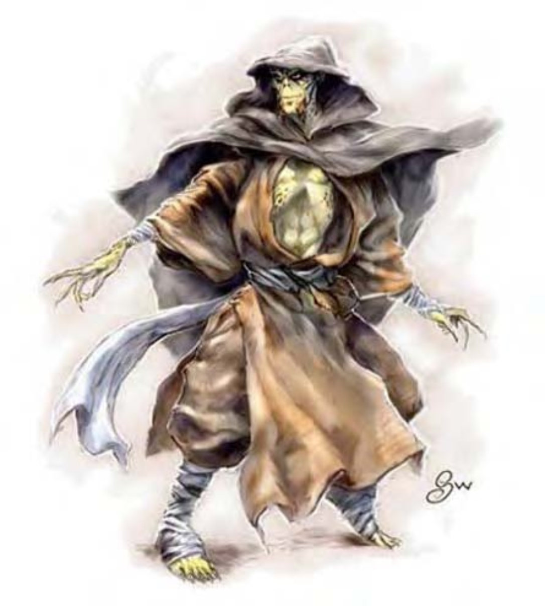

| 资料栏位 | 吉斯泽莱、1级武者 中型人形生物（外界） |
| 生命骰 | 1d8+1（5HP） |
| 先攻 | +3 |
| 速度 | 30英尺（6格） |
| 防御等级 | 17（+3敏捷、+4"惯性盔甲"）、接触13、措手不及14 |
| 基本攻击/擒抱 | +1 / +2 |
| 攻击 | 精制短剑+5近战（1d6+1/19-20）；或复合长弓（+1力量加值）+4远程（1d8+1/x3） |
| 全力攻击 | 精制短剑+5近战（1d6+1/19-20）；或复合长弓（+1力量加值）+4远程（1d8+1/x3） |
| 占据/触及 | 5英尺 / 5英尺 |
| 特殊攻击 | ― |
| 特殊能力 | 黑暗视觉60英尺、灵能、"惯性盔甲"、法术抗力6 |
| 豁免 | 强韧+3、反射+3、意志+0 |
| 属性 | 力量13、敏捷17、体质12、智力8、感知11、魅力8 |
| 技能 | 专注+1、侦察+2 |
| 专长 | 武器娴熟 |
| 环境 | 无定界域 |
| 组织 | 一组（3-12个3级门生）、分派（12-24个3级门生，加上2个7级教员、1个9级教长）或宗派（30-100个3级门生，加上每10个成年吉斯泽莱1个7级教员、5个9级教长、2个13级宗师、1个16级大师） |
| 挑战级数 | 1 |
| 宝藏 | 标准 |
| 阵营 | 任何中立 |
| 进化 | 视人物职业而定 |
| 等级修正值 | +2 |
这个瘦高的人形生物有着轮廓分明、暗沉的脸色以及黄色的眼睛。
吉斯泽莱是一种冷酷的人形生物，他们居住于界边域，守护着他们的秘密道场。
吉斯泽莱平均身高6英尺多，体重约160磅。有些人的眼睛为灰色而非黄色。所有人都穿着单调简朴的服饰。
为了遵守门规，吉斯泽莱大多沉默寡言，不会对他人透露自己的想法，也极少信任外人。
吉斯泽莱有自己的语言（近似于吉斯扬基语，两个种族使用各自的语言亦可互相沟通，如果他们愿意的话。）但许多人也懂通用语。
上述为1级武者的各项数值。有许多吉斯泽莱是武僧，但术士、游荡者与兼职的吉斯泽莱（称作流视）也是道场里不可或缺的一员。
战斗吉斯泽莱武僧可以赤手空拳、不穿防具进行战斗。他们总是渴望与敌人，像是夺心魔或吉斯扬基好好打上一场。近战中吉斯泽莱术士常会使用他们的力量帮助武僧、武者或游荡者同伴。
灵能（类法术能力）：每天3次――"晕眩术"（DC=9）、"羽落术"、"粉碎音波"（DC=11）。11级以上的吉斯泽莱每天可施展1次"异界传送"（DC=16）。有效施法者等级与职业等级同。豁免检定DC的调整值与魅力调整值相同。
"惯性盔甲"（类法术能力）：吉斯泽莱使用灵能阻挡敌人的攻击力道。只要意识清醒，此能力可使他们的AC获得+4盔甲加值，此能力等同于一级法术。
法术抗力（特异）：吉斯泽莱的法术抗力等于其职业等级+5。
此处列出的吉斯泽莱武者在计算种族修正值前，具有下列属性：力量13、敏捷11、体质12、智力10、感知9、魅力8。
挑战级数：若具有非玩家人物职业，吉斯泽莱的挑战级数等于人物等级。若具有玩家人物职业，则挑战级数等于人物等级+1。
吉斯泽莱的祖先响应吉斯的反叛（见上述吉斯扬基的段落），合作推翻了跨界域的夺心魔帝国。奴隶们在获得自由之后因理念与种族上的差异而分裂，成为敌对的吉斯泽莱与吉斯扬基两族。吉斯泽莱受拘禁的历史成为他们道场生活的基础，所有吉斯泽莱从幼年起，就在道场学习如何消灭可能会压迫他们或与他们为敌（非同族者）的人。
吉斯泽莱住在自给自足的要塞型道场里，隐藏于界边域混沌的深处。道场外混乱统治一切，其内却以稳定为本。每个道场皆由一位大师（16级以上的武僧）治理，他们严守固定的作息诵经、用膳、练武，并皈依大师的特殊哲学理念。道场里的非战士（大多为孩童）数量约为战士人口的15%，两种性别的吉斯泽莱皆可担任任何职业。
拉克玛：某些具有特殊信念的吉斯泽莱会组成一只猎杀夺心魔的部队，称为拉克玛。拉克玛大多由4-5个8级、1-2个11级吉斯泽莱武僧组成，但其中至少会有一个术士，也可能会有游荡者。拉克玛在尚未杀灭等于其成员数量的灵吸怪前，不会回到自己的道场。
吉斯泽莱的人物吉斯泽莱人物具有下列种族特性：
―+6敏捷、-2智力、+2感知。
―中型。
―吉斯泽莱的基本行走速度为30英尺。
―黑暗视觉可达60英尺。
―种族专长：吉斯泽莱人物依据其职业选择专长。
―特殊能力（见前文）：灵能、"惯性盔甲"、法术抗力等同于职业等级+5。
―母语：吉斯泽莱语。额外语言：通用语、史拉蟾族语、地底通用语。
―适合职业：武僧。
―等级修正值：+2。